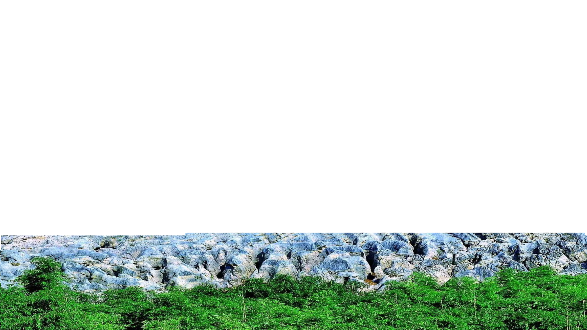
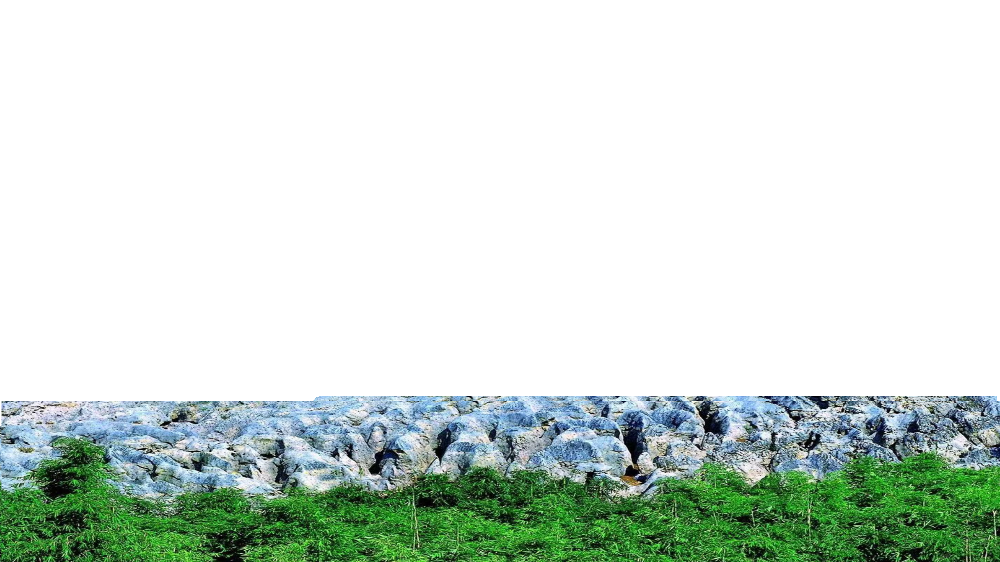

风景简介
兴文石海，位于四川省宜宾市兴文县的一处，世界地质公园
国家AAAA级旅游景区，占地面积约156平方千米。它是由距今4.9
亿年至2.5亿年的碳酸盐地层形成的喀斯特地貌，保存了丰富的海
相古生物化石和沉积相标志。它是国内发现和研究天坑最早的地
方，也是研究西南地区喀斯特地貌的重要地区。兴文石海有四个
园区，分别是小岩湾、僰王山、太安石林和凌霄城。其中，小岩
湾园区以天泉洞为代表，是中国天然游览长度最大的溶洞，已探
测长度为10.5千米，洞内景观千姿百态，令人惊叹。僰王山园区
以自然生态著称，有峡谷、瀑布、湖泊、溶洞、僰人悬棺等多种
地质遗迹景观，还有神秘独特的古僰人历史文化和原生态苗族风
情。太安石林园区是形成于距今4.9亿年的奥陶纪的古石林，有千
年银杏、溶洞群、翠竹林海相伴相生，是一处养生胜地。凌霄城
园区是桫椤树掩映着的凌霄僰人遗址，是古代僰人的居住地，也
是兴文石海的发源地。